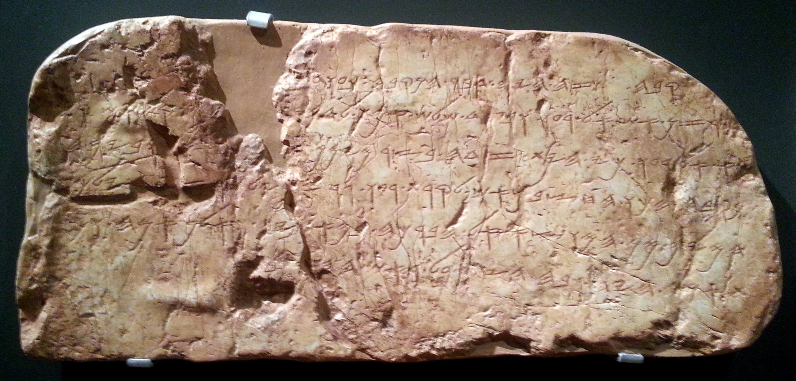
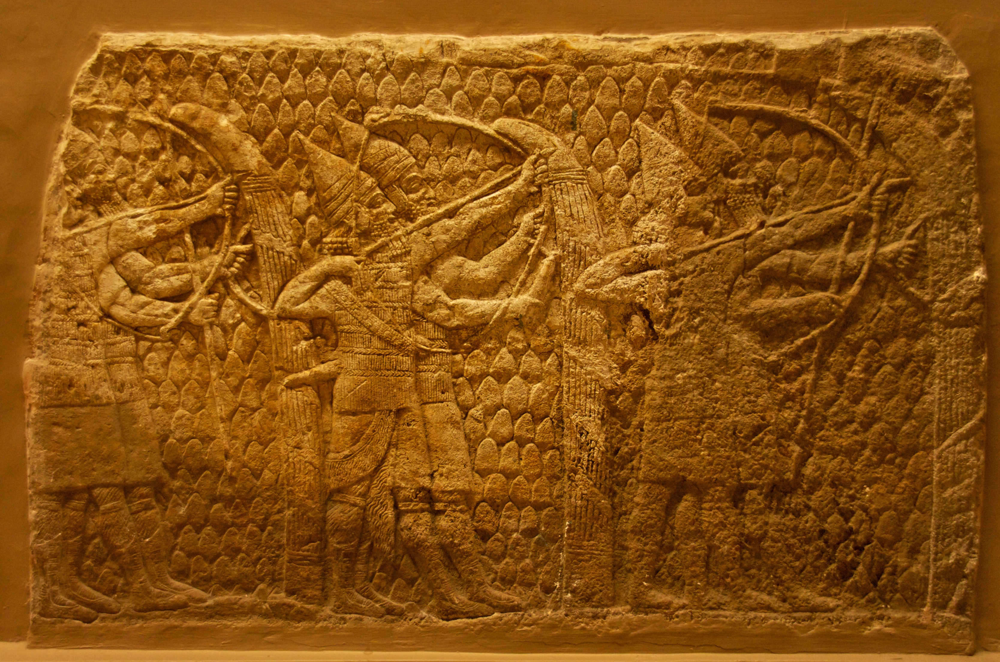

Si gran parte de la historia bíblica fue escrita mucho después de los hechos, ¿cuándo y por qué? La arqueología apunta a un rey concreto, un momento concreto, y una intención muy humana.
Hemos visto que el Éxodo no dejó huellas y que el reino de David fue más modesto que su leyenda. Queda la pregunta que lo une todo: si buena parte de la Biblia hebrea se escribió bastante después de los hechos que narra, ¿en qué momento se compuso, y con qué propósito? La respuesta de Finkelstein —la tesis que corona su libro— apunta a un rey concreto: Josías, y a un siglo concreto, el VII a.C. Es el cierre de esta serie y, en cierto modo, de todo el blog.
A diferencia del brumoso siglo X de David, el reino de Judá del siglo VII a.C. está espléndidamente documentado por la arqueología. Para entonces, tras la caída del reino del norte (Israel) ante Asiria en el 722 a.C., Judá era un estado plenamente desarrollado: con burocracia, ejército, comercio y —crucialmente— escribas alfabetizados. No hay que imaginarlo: se ve en la tierra.

Inscripciones como la de Siloé, o los archivos de ostraca (fragmentos con escritura) hallados en fortalezas de Judá, muestran una sociedad que sabía leer y escribir, con capacidad de producir textos complejos. Es la condición material necesaria para que alguien pudiera componer una gran obra literaria e histórica como la que se convertiría en el núcleo de la Biblia hebrea.

La propia Biblia deja una pista fascinante. El segundo libro de los Reyes narra que, durante el reinado de Josías (hacia el 622 a.C.), mientras se reparaba el Templo, el sumo sacerdote “encontró el libro de la Ley”. Su lectura provocó una conmoción: Josías lanzó una reforma religiosa radical —centralizó todo el culto en Jerusalén, destruyó los santuarios locales, abolió otras deidades—.
Muchos estudiosos, desde hace más de un siglo, identifican ese "libro hallado" con un núcleo del Deuteronomio. Y la lectura crítica va más allá: el momento de Josías habría sido cuando se compiló y dio forma a buena parte de la historia bíblica —desde el Deuteronomio hasta los libros de Reyes—, la llamada historia deuteronomista.
Aquí Finkelstein enlaza la arqueología con la crítica textual, y la tesis se vuelve poderosa. En su lectura, la gran historia nacional —los patriarcas, el Éxodo, la conquista, el reino unido— se compuso o reelaboró en tiempos de Josías no como crónica objetiva, sino como una herramienta de su proyecto: unir a todo el pueblo en torno a Jerusalén, su Templo y su dios único, YHWH, bajo la dinastía davídica.
Los relatos del pasado glorioso servían al presente: si Dios había prometido la tierra a Abraham, si David había reinado sobre un gran Israel unido, entonces Josías podía reclamar esa herencia y ese ideal de unidad. El pasado se escribió para legitimar el presente —algo que hacen casi todas las naciones, y que no resta belleza al resultado—.
Fíjate en lo que acaba de ocurrir: esta serie arqueológica ha llegado, por su cuenta, al mismo lugar que nuestra serie sobre los libros perdidos. Allí vimos, desde la crítica textual, que el canon se formó gradualmente y que los textos se editaron con intención teológica. Aquí, desde la pala, llegamos a la misma conclusión: la Biblia es una obra compuesta por manos humanas, en momentos históricos concretos, con propósitos concretos.
Las dos mitades de la disciplina —el texto y la tierra— convergen. Y también enlaza con el principio de todo: si el monoteísmo de YHWH se consolidó como proyecto de Estado bajo Josías, entonces la larga historia que contamos en la primera serie —de El a YHWH, de muchos dioses a uno— tuvo aquí uno de sus momentos decisivos, ahora confirmado por la arqueología.
La arqueología sugiere que buena parte de la Biblia tomó forma en el siglo VII a.C., bajo el rey Josías, como una gran historia nacional que unía al pueblo en torno a Jerusalén y su Dios. No es una crónica neutral: es una obra escrita con un propósito. Y a esa misma conclusión habíamos llegado antes estudiando los textos. La pala y la pluma coinciden.
"La Biblia desenterrada" empezó preguntando qué pasa cuando el texto y la tierra no coinciden. La respuesta, tras cuatro entregas, es matizada y hermosa: no coinciden como crónica literal, pero se iluminan mutuamente como historia. La arqueología no ha "destruido" la Biblia —le ha dado un contexto, un cuándo, un porqué—. Ha mostrado que es una construcción humana extraordinaria, nacida de comunidades reales que buscaban sentido, identidad y unidad.
Y esa es, en el fondo, la misma lección de todo Estratos: mirar la religión como un terreno de capas, cada una depositada por manos humanas en su tiempo. Ver esas capas no disuelve lo sagrado —lo hace más humano, y por eso más fascinante—.
El texto y la tierra no siempre coinciden. Pero juntos cuentan una historia más rica que cualquiera por separado.
La Biblia no cayó del cielo: se levantó desde el suelo de Judá, escrita por manos humanas que buscaban unir a un pueblo en torno a su Dios.
El reino de Judá del s. VII a.C. como estado alfabetizado y desarrollado está bien documentado. La reforma de Josías (c. 622 a.C.) y la identificación del "libro hallado" con un núcleo del Deuteronomio son lectura crítica mayoritaria desde el siglo XIX. La existencia de una "historia deuteronomista" compuesta en torno a esa época es consenso amplio.
En debate: la proporción exacta de material del s. VII frente a tradiciones anteriores (que muchos aceptan) y a redacción posterior (exílica y postexílica, s. VI-V a.C.), que otros estudiosos enfatizan más que Finkelstein. La tesis de la composición como "proyecto de Josías" es influyente pero no unánime en todos sus detalles.
Este artículo describe la formación histórica de la Biblia hebrea con respeto por su valor espiritual. Que un texto tenga autores humanos e historia no prejuzga las cuestiones de fe, que quedan fuera del alcance de la arqueología.